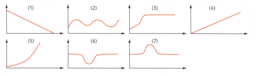
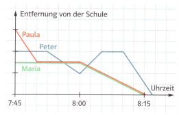
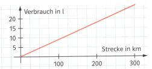

2.3 Funktionen
Aufgabe 1
Welcher der Graphen könnte zu welcher Zuordnung gehören? Begründe.

Zeit \(\rightarrow\) zurückgelegter Weg bei konstanter Geschwindigkeit
Brenndauer \(\rightarrow\) Höhe einer brennenden Kerze
Volumen \(\rightarrow\) Füllhöhe einer bauchigen Vase
Zeit \(\rightarrow\) Geschwindigkeit beim Fahren einer Kurve
Zeit \(\rightarrow\) abstand vom Boden zum Schaukelbrett
Alter eines Menschen \(\rightarrow\) seine Körpergröße
Überlege dir für den übrig gebliebenen Graphen eine passende Zuordnung. Begründe.
Aufgabe 2
Aus der Lernstandserhebung von 2004:

Obige Abbildung zeigt die Schulwege von Paula, Maria und Peter. Alle drei besuchen die gleiche Schule, wohnen aber unterschiedlich weit weg von ihr. Entscheide, ob die folgenden Aussagen stimmen können oder nicht oder ob sie sich nicht beantworten lassen. Begründe deine Entscheidung.
Paula wohnt am weitesten von der Schule entfernt.
Peter geht am langsamsten und kommt daher auch als Letzter in der Schule an.
Paula holt Maria von zu Hause ab. Maria ist aber noch nicht fertig, als Paula kommt.
Peter hat etwas zu Hause vergessen, was ihm auf halbem Weg einfällt.
Paula geht mit Maria schneller als ohne Maria.
Maria wohnt einen Kilomenter von der Schule entfernt.
Aufgabe 3
Das Auto von Herrn Huber verbraucht durchschnittlich 8 Liter Benzin auf 100km. Das Auto von Herrn Schreiber verbraucht nur 7 Liter auf 100km, das von Frau Krause 9 Liter auf 100 km. Die Tabelle und der Graph stellen den durchschnittlichen Benzinverbrauch je eines dieser Autos dar.
| Strecke in km | Verbrauch in Litern |
|---|---|
| 80 | 6,4 |
| 150 | 12 |
| 180 | 14,4 |
| 260 | 20,8 |

Zu welchem Auto passt die Tabelle. Begründe.
Zu welchem Auto passt der Graph. Begründe.
Gib für den Benzinverbrauch der drei Autos je eine Funktionsgleichung an, welche die Anzahl der verbrauchten Liter y in Abhängigkeit von den gefahrenen Kilometern x angibt.